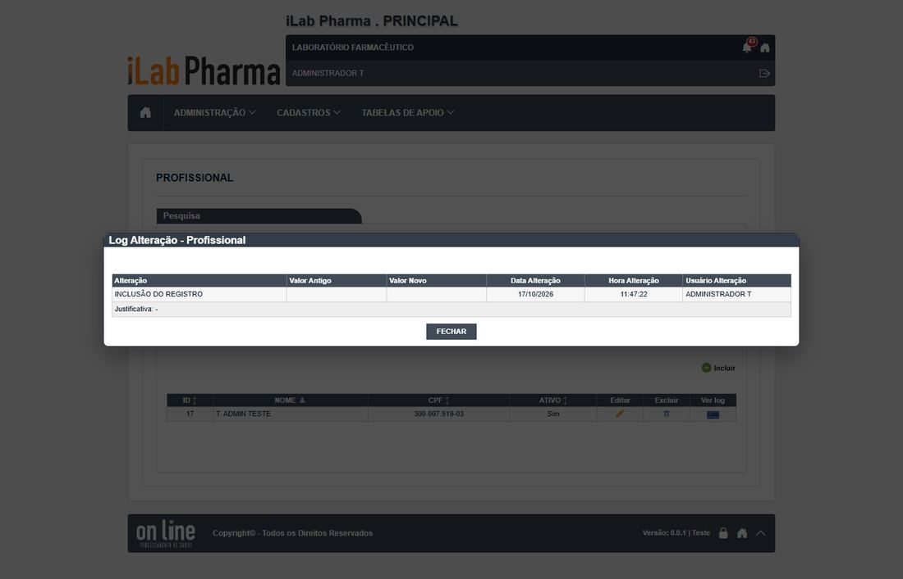
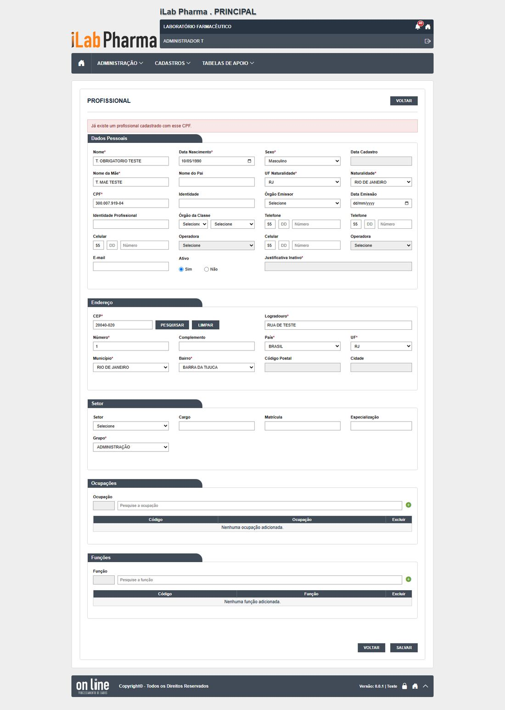
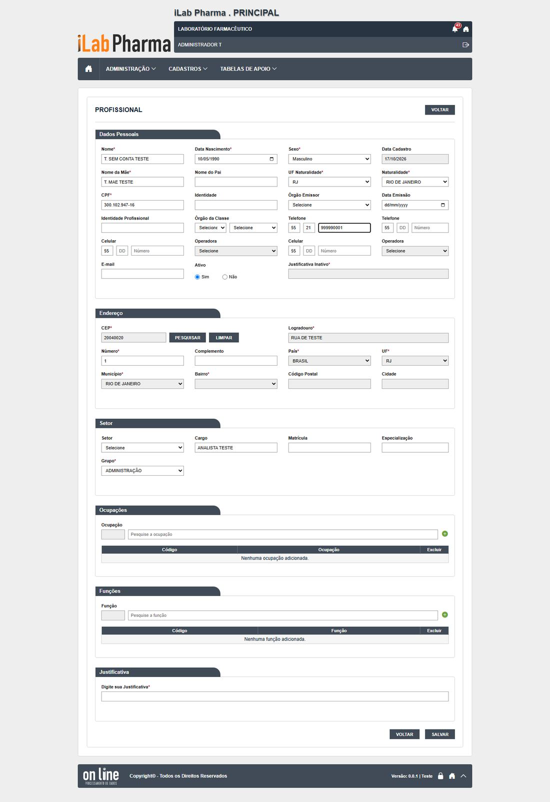
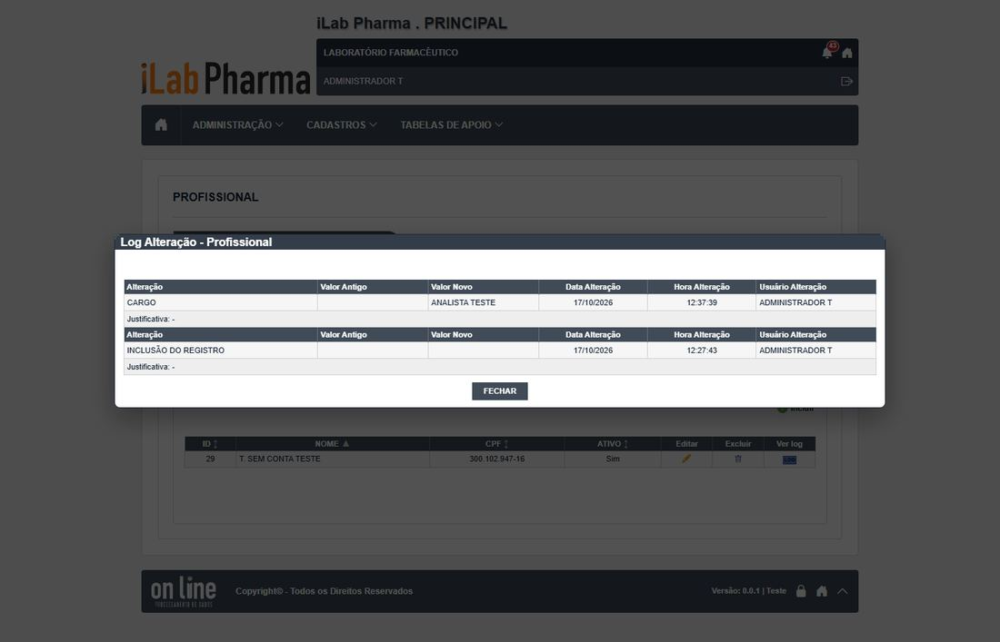
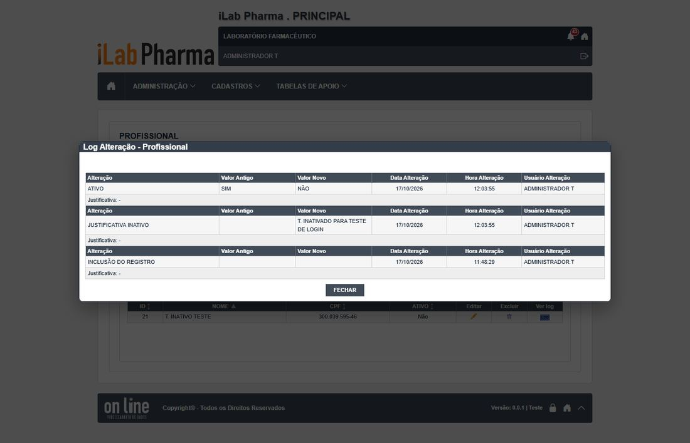
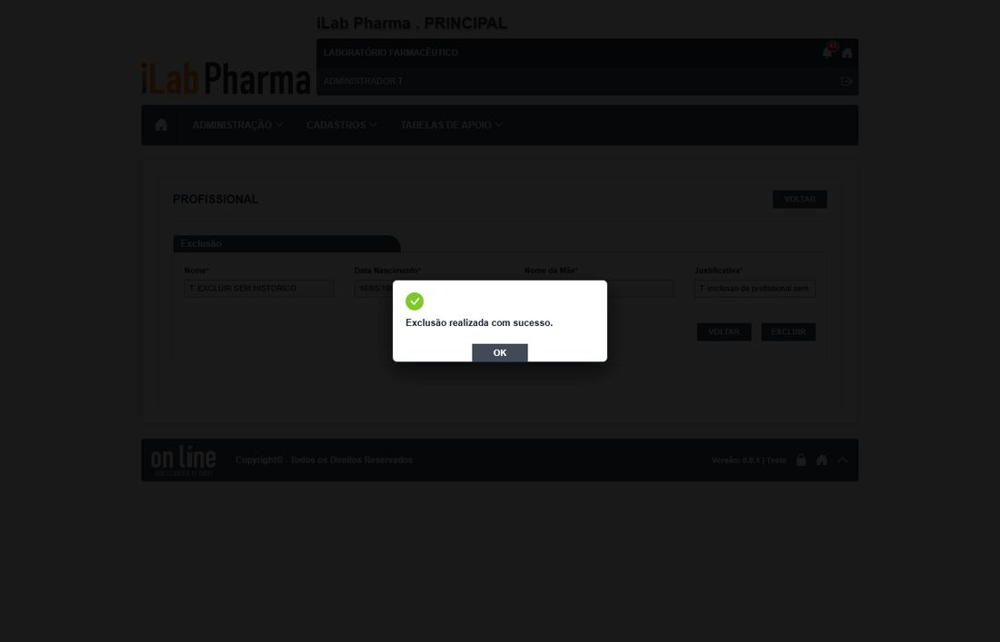
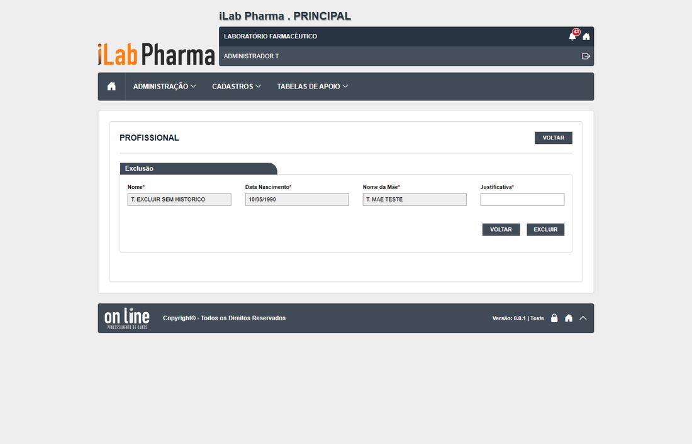
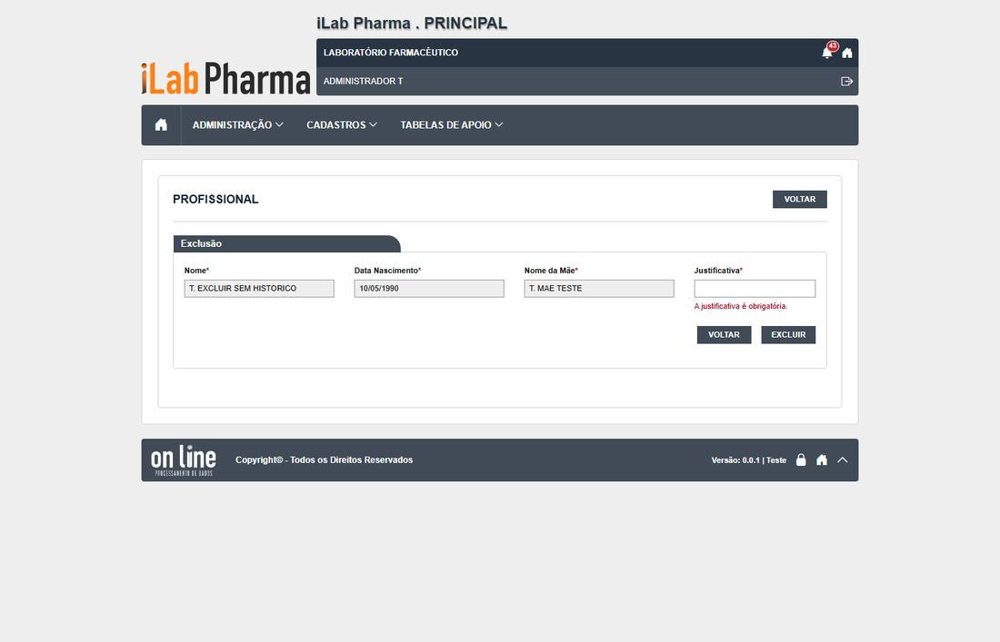
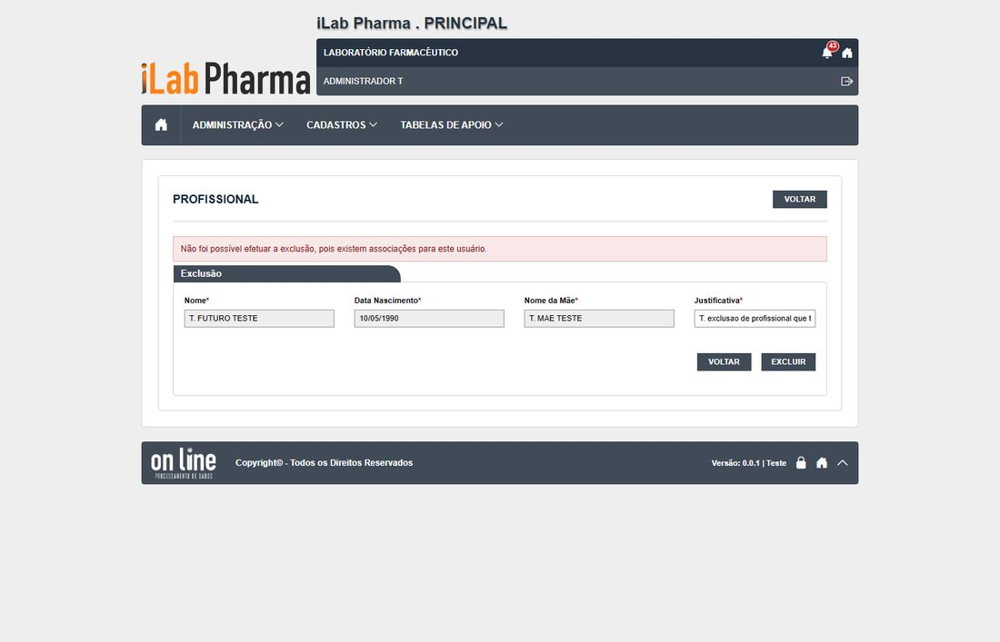

Roteiro para quem vai testar a tela Profissional (menu Administração) na versão nova. Use o ambiente de teste da versão nova; o sistema entregue só entra se um resultado parecer estranho.
Antes de começar
- Usuário com perfil
0.T.TESTE_ADMIN. - Registros novos começam por
T.. - Todo registro novo começa com
T.(se o ponto falhar, useT-e anote o campo). - Dados de teste ficam no ambiente: não apague o que não criou.
Passos
| # | O que fazer | O que deve aparecer | Caso do plano |
|---|---|---|---|
| 1 | Abrir Administração > Profissional e clicar em Incluir. | O formulário abre. | CT-PRI-040 |
| 2 | Salvar sem preencher. Repetir deixando em branco cada campo obrigatório, um de cada vez. | 15 obrigatórios; cada um é recusado com mensagem, antes da pergunta de confirmação. | CT-PRI-041 |
| 3 | Preencher tudo e informar CPFs: 000.000.000-00, 111.111.111-11, um com dígito errado e um com letras. | Deveriam ser recusados. Hoje são aceitos: anote N-016. | CT-PRI-041 |
| 4 | Salvar o profissional T. PROFISSIONAL TESTE e abrir o histórico. |
"INCLUSÃO DO REGISTRO", com usuário, data e hora. | CT-PRI-040 |
| 5 | Editar cargo, e-mail, matrícula e telefone, preenchendo a justificativa de edição. | Hoje: grava sem exigir justificativa. Abra o histórico e confira cada campo e a justificativa. | CT-PRI-044 |
| 6 | Inativar o profissional com e sem justificativa. Tentar entrar com ele. | Exige justificativa; "Usuário inativo." | CT-PRI-045 |
| 7 | Excluir um profissional sem conta, sem justificativa e depois com. | Sem justificativa recusa; com justificativa exclui. | CT-PRI-047, 049 |
| 8 | Tentar excluir um profissional que tem conta. | Recusado. Anote se a mensagem diz qual associação impede. | CT-PRI-048 |
Capturas de tela da versão nova
Imagens da rodada de testes de 17/10/2026, na ordem dos passos. Clique para ampliar.
Passo 1

Passo 2

Passo 3
Passo 4
Passo 5


Passo 6

Passo 7



Passo 8

Como registrar
Para cada passo anote: o que apareceu na tela (copie a mensagem), a classe (Igual, Regressão, Melhoria, Novo ou Bloqueado), o defeito (se houver) e o nome da captura. Se um caso ficou Bloqueado, diga o motivo (usuário, perfil ou dado que faltou).
Se algo parecer uma falha de permissão, confira primeiro a Conta usuário e o Perfil do usuário antes de concluir que a tela falhou.
Tabela de resultados
A coluna Resultado do caso em 17/10/2026 traz o que a tela mostrou, para o caso do plano que o passo cobre (passos do mesmo caso repetem o resultado). Refaça o passo e use a última coluna para o seu resultado: se for diferente, anote a classe (Igual, Regressão, Melhoria, Novo ou Bloqueado) e o defeito.
| Passo | Resultado do caso em 17/10/2026 | Classe | Defeito | Captura | Seu resultado |
|---|---|---|---|---|---|
| 1 | Criados 11 vezes. Histórico: "INCLUSÃO DO REGISTRO" e "INCLUSÃO DA CONTA" | Igual | DV-PRI-003 | CT-PRI-040-passo-1-historico-profissional |
|
| 2 | 15 obrigatórios recusados um a um. CPF não validado | Regressão | DV-PRI-N-016 | CT-PRI-041-CPFdigitoerrad, CT-PRI-041-CPFduplicadode |
|
| 3 | 15 obrigatórios recusados um a um. CPF não validado | Regressão | DV-PRI-N-016 | CT-PRI-041-CPFdigitoerrad, CT-PRI-041-CPFduplicadode |
|
| 4 | Criados 11 vezes. Histórico: "INCLUSÃO DO REGISTRO" e "INCLUSÃO DA CONTA" | Igual | DV-PRI-003 | CT-PRI-040-passo-1-historico-profissional |
|
| 5 | Grava sem pedir justificativa; a justificativa digitada não é gravada; telefone não entra no histórico. O cargo em branco do legado não se repete | Regressão | DV-PRI-N-015 | CT-PRI-044-passo-1-edicao, CT-PRI-044-passo-2-historico |
|
| 6 | Exige justificativa; histórico "ATIVO SIM → NÃO"; o usuário não entra | Igual | — | CT-PRI-045-passo-1-historico-profissional |
|
| 7 | Exclui com justificativa (204) e some da lista; o histórico do excluído deixa de ser acessível. Falta o DBA confirmar a lixeira / Profissional: "A justificativa é obrigatória." | Igual | — | CT-PRI-047-passo-1-excluido, CT-PRI-049-passo-1-tela-exclusao |
|
| 8 | Recusado: "existem associações para este usuário", sem dizer qual. O legado excluía sem avisar | Melhoria | — | CT-PRI-048-passo-1-profissional-com-conta, CT-PRI-048-passo-3-profissional-com-registros |